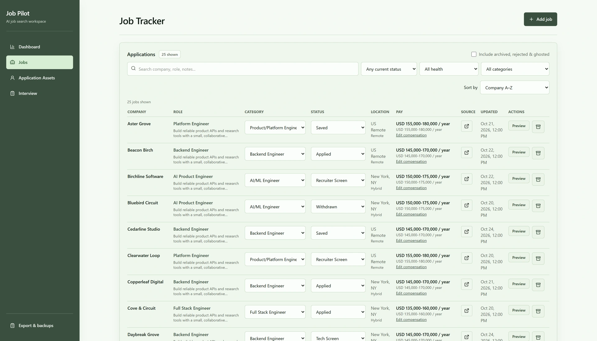
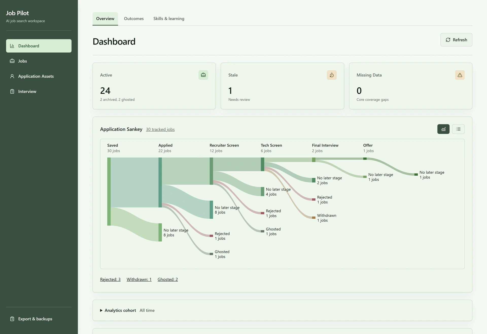
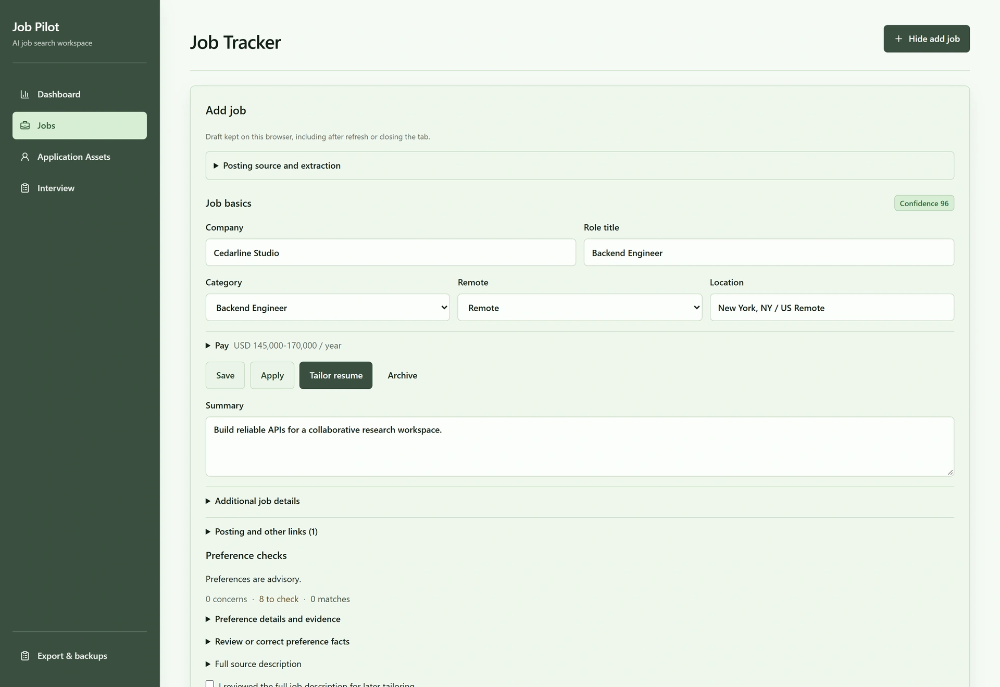
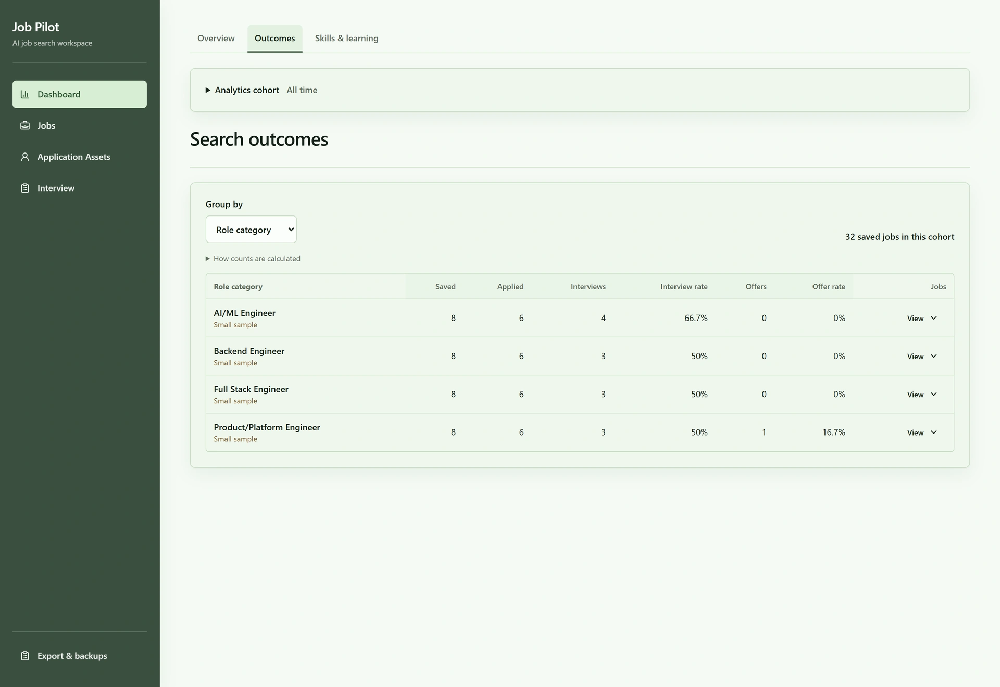
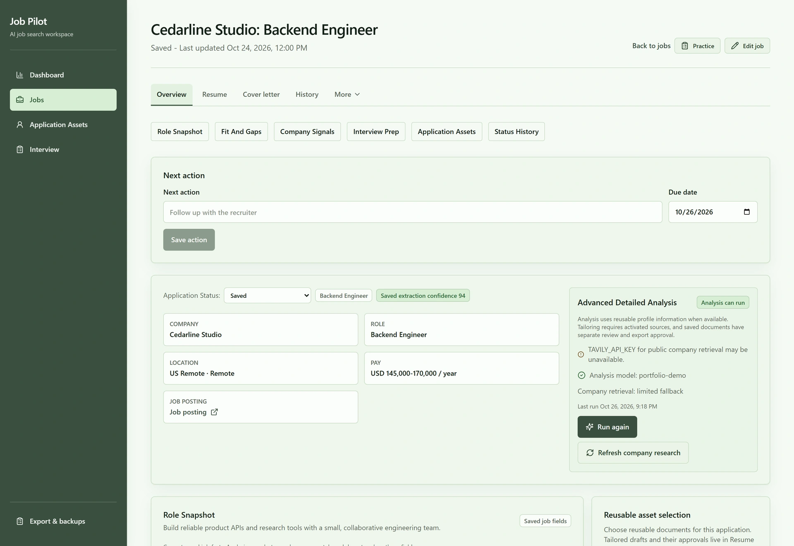
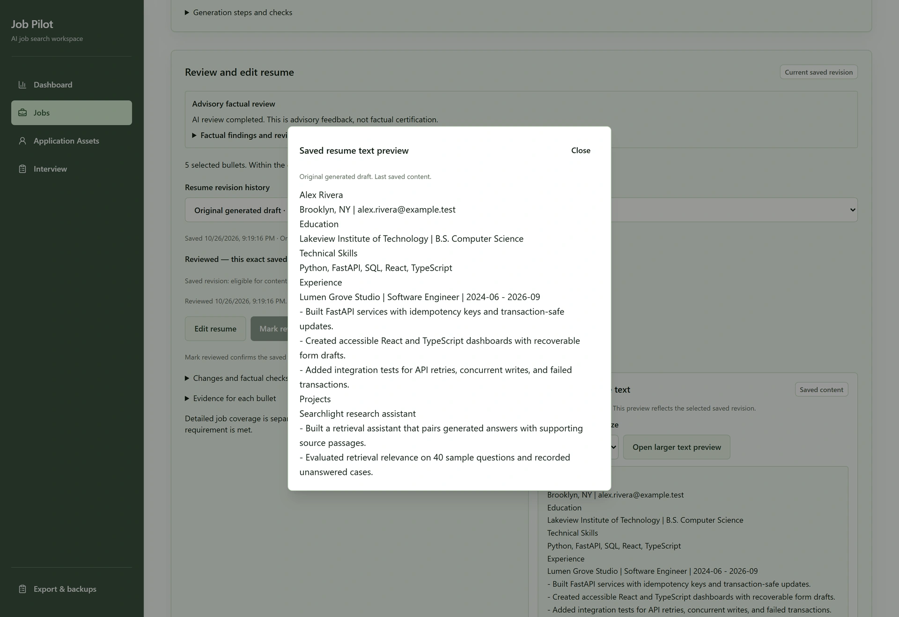
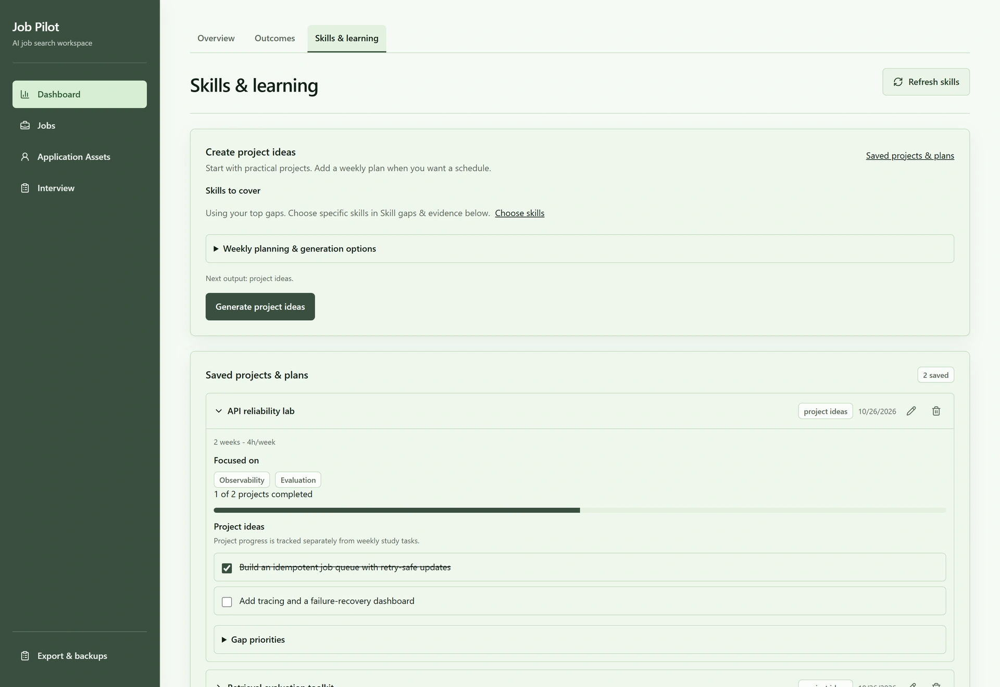
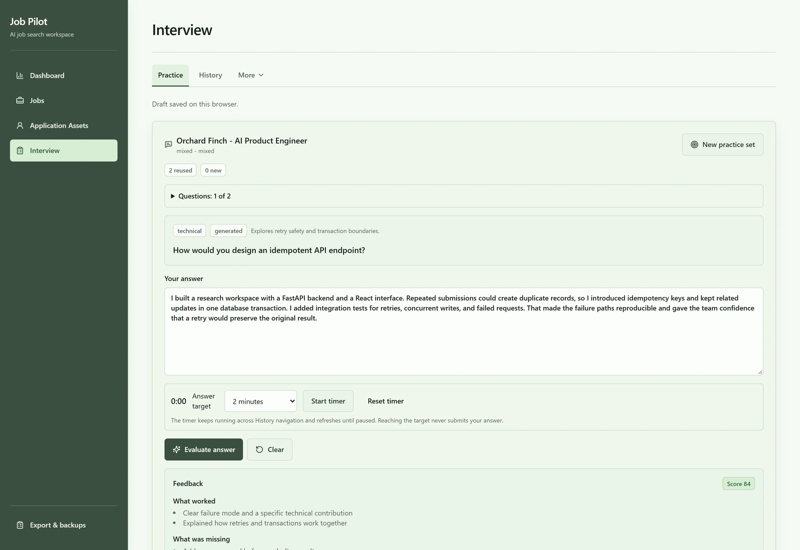
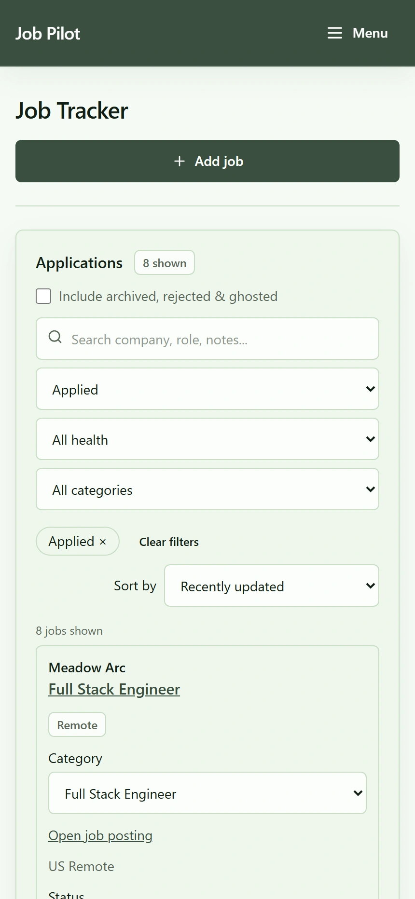
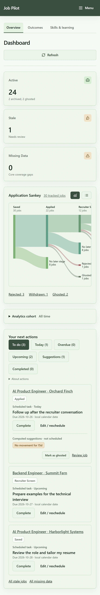

Jobs trackerRecommendedPrimary website image: the day-to-day job search workspace.WebP · 167 KBPNG · 3840×2200
DashboardRecommendedPrimary website image: application progress at a glance.WebP · 84 KBPNG · 3200×2200
Job intakeSupporting image: turn a job posting into a reviewed opportunity.WebP · 80 KBPNG · 3200×2200
Outcomes comparisonsSupporting image: compare outcomes without a long page of cards.WebP · 59 KBPNG · 3200×2200
Job overviewSupporting image: keep a job's information and workflows together.WebP · 123 KBPNG · 3200×2200
Resume tailoringSupporting image: generated content remains reviewable and editable.WebP · 154 KBPNG · 3200×2200
Learning through projectsSupporting image: turn recurring skill gaps into saved project work.WebP · 84 KBPNG · 3200×2200
Interview practiceSupporting image: practice an answer and review targeted feedback.WebP · 109 KBPNG · 3200×2200
Jobs on mobileMobile companion to the Jobs hero; an actual viewport capture.WebP · 63 KBPNG · 860×1864
Dashboard on mobileMobile companion to the Dashboard hero; full page for flexible cropping.WebP · 171 KBPNG · 860×5106